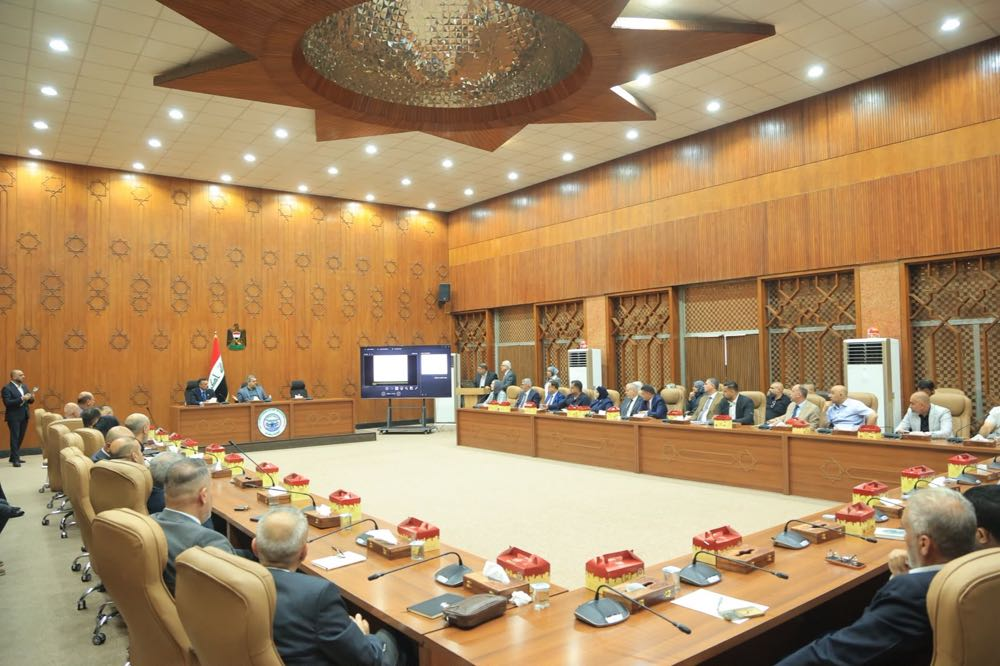

Mansour municipality has moved into a new building. It is the first of the Mayoralty's model municipality offices.
The Mayor opened the building with the three deputy mayors and the directors general of the Mayoralty's departments.
The municipality's email is listed under Contact.